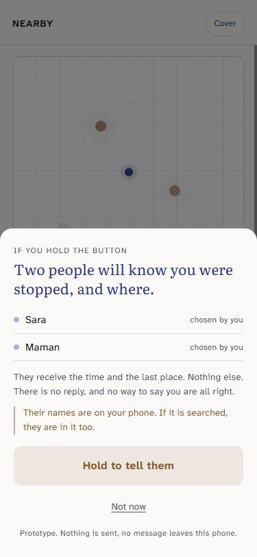
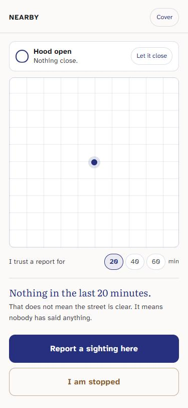

Nothing Recent
Speculative HCI · Research through Design · 2026
Two objects for a street where covering is enforced: an app that forgets, and a hood that covers you before you decide.
The street
In Iran the hijab law is enforced in public by patrols. They do not stay in one place: they arrive, wait, move on. So women read the street before they walk it — which exit, which square, which hour. The knowledge is shared, quietly, and it goes stale fast.
The interaction
- 01 · Cover. The app opens as a stitch counter that really counts. A long press on the number opens what is underneath.
- 02 · Forget. Women mark where a patrol is. Every report fades for its whole life and then dies. How long it is trusted — 20, 40 or 60 minutes — is her decision, not the app's.
- 03 · Cover again. When a report is close, the hood closes itself. It tells her afterwards. She can hold it open.
Research question
When the garment obeys the law faster than I can decide, who is wearing whom?




The hood
A garment that listens to the app. When a patrol is reported close, it lifts and covers the head by itself — faster than a hand, earlier than a thought. It does not ask. It reports afterwards: it covered you, you did not decide this.
This is where the proposal turns on itself. A hood that obeys the law for you is also a hood that obeys the law before you, and perfectly. So it carries one refusal: she can hold it open while the danger is near.
Tensions
- SafetyAutonomy The hood buys one with the other, and never says the price.
- WarningEvidence What warns you is proof that you knew.
- SilenceSafety An empty screen only means nobody spoke.
- ObedienceCare A thing that protects by complying is still complying.
Position
This is a proposal. The app works and the hood is designed, not studied: nothing here has been tested with anyone and nothing claims to help.
It does not speak for women living in Iran. It is a design question asked from my own position, as an Iranian designer working in Germany.